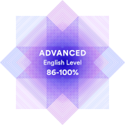

Anna Kniazeva

Contact information
- Location: Saint-Petersburg, Russia
- E-mail: alattery@gmail.com
- Telegram: @annaKn
- GitHub: annTerry
- LinkedIn: Anna Kniazeva
About Me:
Web-developer since 2002 year. I have much experience with JavaScript from ES3 to ES6. I have been codding on Perl, PHP, Java etc. Now I’m learning Node.JS. I like old projects, foreign and legacy code and control both and FrontEnd and BackEnd. But if I must choice, I’ll prefer FrontEnd. I have been programming from my childhood, and now have more then 15 years of experience in codding on different languages, adding new features and fixing bugs in dozens of applications. I’d want to be useful in improve quality and functionality of applications in modern company.
Skills:
- HTML
- CSS, SCSS
- JavaScript, Typescript
- Java Basics (jsp, velocity, vaadin, JSON processing, Android Apps)
- Node.JS Basics
- Python Basics
- PHP, Perl, MySQL
- Webpack
- IntelliJ IDEA, VSCode
- Adobe Photoshop, Adobe Premiere
Code example:
class BlockedCheckbox{
element = document.getElementById('blocking_checkbox');
constructor() {
if (this.element) {
this.element.addEventListener('change', () => {
let changeEvent = new Event('dataChanged');
this.element.dispatchEvent(changeEvent);
})
}
}
elementValue()
{
return this.element.checked ? "false" : "true";
}
}
export {BlockedCheckbox}
Education
- 2003-2009 Saint-Petersburg State University of Aerospace Instrumentation
- Software for computing complexes and computer-aided systems
- Computer-aided systems of information processing and management
- 1997 - 2002 Saint-Petersburg State University of Water Communications
- Financial and Credit
- 2001 - 2002 MAOV. Web-developer course
- 2022 RS_School JavaScript/Front-end (3,406.3 Score points)
- 2022 RS_School NodeJS (in progress)
Work Experience
- 2008 - Present: Favor-IT, Web-developer
- 2002 - 2008: DiscTrade, Content Manager
Some Projects
Languages:
- English - Upper-intermediate 
- Greek - Base
- Russian - Native